Конкурси · журнал «ДентАрт» 2024 №1
Мотивація, реалізація і розвиток лікарів-інтернів через участь у конкурсах професійної майстерності
MOTIVATION, REALIZATION AND DEVELOPMENT OF INTERNS THROUGH PARTICIPATION IN PROFESSIONAL COMPETITIONS
Умови війни ставлять перед викладачами кафедр післядипломної освіти медичних вузів складні завдання. Важливо не тільки надати лікарям-інтернам певні умови для обрання подальшої спеціалізації, а й зберегти зацікавленість лікарів у професійному рості та надихнути їх на подальший розвиток. Особливо важливою є підтримка і створення сприятливого середовища для навчання та професійного зростання, а також організація заходів, спрямованих на мотивацію лікарів. Тож професійні конкурси дозволяють молодим лікарям зробити певний ривок у професійному розвитку, здобути широкий спектр знань, починаючи як з простих діагностичних маніпуляцій, так і менш розповсюджених, але вкрай важливих навичок для правильного планування майбутнього лікування, таких як фотопротоколювання, рентгенографія, створення мокапу та ін. Під час підготовки до клінічних професійних конкурсів організаційні комітети стикаються з певними труднощами підбору схожих клінічних ситуацій, а також з їх експертною оцінкою.
Лікарі-стоматологи, які мають високий рівень мислення і вміння, здатні здійснювати якісні функціональні й естетичні реставрації, точно відтворюючи еталон та імітуючи параметри зубів для їхньої правильної функції. Оцінка результатів відновлення зубів є суб'єктивним процесом, оскільки одні й ті самі результати можуть сприйматися різними лікарями та пацієнтами по-різному.
Поліпшення якості стоматологічної допомоги можливе лише за умови визначення чітких показників, які дозволяють об'єктивно оцінювати результати лікування. Ці показники формуються під час професійних конкурсів, де лікарі можуть випробувати різні методи та матеріали для реставрації зубів. Відкритість у проведенні конкурсів дозволяє інтегрувати ці критерії якості у повсякденну роботу стоматологів.
Тож оновлення і формування протоколів оцінки реставрацій саме під час проведення професійних конкурсів лікарів та інтернів дозволяють випробувати різні підходи до експертизи якості за короткий час і навчити цьому всіх учасників процесу – від конкурсантів до членів журі конкурсу. При оцінюванні спостерігається перехід від вимірювання компетенції лікарів до вимірювання результатів реставрації, а відкритість при висвітленні конкурсу в соціальних мережах і пресі дає можливість інтеграції цих критеріїв у повсякденну роботу всіх спеціалістів.1
17 лютого 2024 року кафедра післядипломної освіти лікарів-стоматологів Полтавського державного медичного університету провела ювілейний XXV Всеукраїнський професійний конкурс лікарів-стоматологів «Шлях у світ майстерності», який проходив на базі клініки «Професорська стоматологія». За умовами конкурсу лікарі-інтерни повинні володіти технологією роботи із сучасними реставраційними матеріалами, уміти виконувати реставрації в зоні передніх зубів верхньої щелепи, порожнин класів III, IV за Блеком, лікувати неускладнений карієс. Лікування проводять під анестезією з використанням ізоляції системою рабердам. Робота виконується з асистентом «у чотири руки». Тривалість роботи – до 3-х годин.
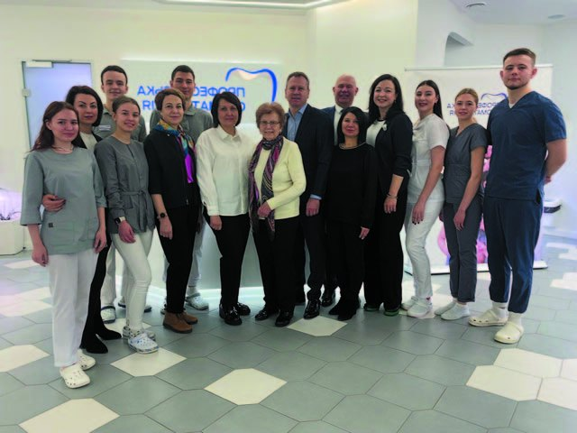
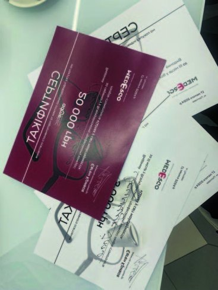
Уже четвертий рік поспіль перший тур конкурсу проводиться в онлайн-форматі. Цьогоріч у ньому взяли участь 17 лікарів-інтернів з 12 міст України, які надали презентації своїх робіт.
Тож одноголосно членами журі 25-го Всеукраїнського навчального семінару «Шлях у світ майстерності», що відбувся 9 лютого 2024 року, переможцем першого онлайн-туру був обраний Давид Шиман (м. Івано-Франківськ, ІФНМУ), який, на жаль, не зміг бути присутнім на очному турі конкурсу, але отримав заохочувальний приз та відзнаку.
Очна частина конкурсу, підбиття підсумків та нагородження переможців відбулися 17 лютого 2024 року. Переможцями конкурсу стали:
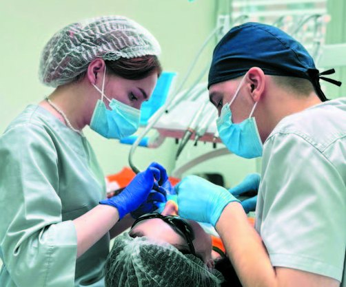
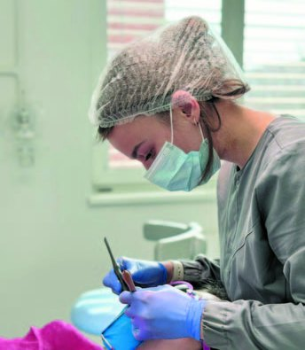
- Гран-Прі — Сорока Катерина (м. Харків)
- I місце — Крощенко Олексій (м. Охтирка)
- II місце — Довгань Борис (м. Тернопіль), Охріменко Ірина (м. Полтава)
- III місце — Яковлева Аріна (м. Миколаїв), Якимчук Ілля (м. Біла Церква)
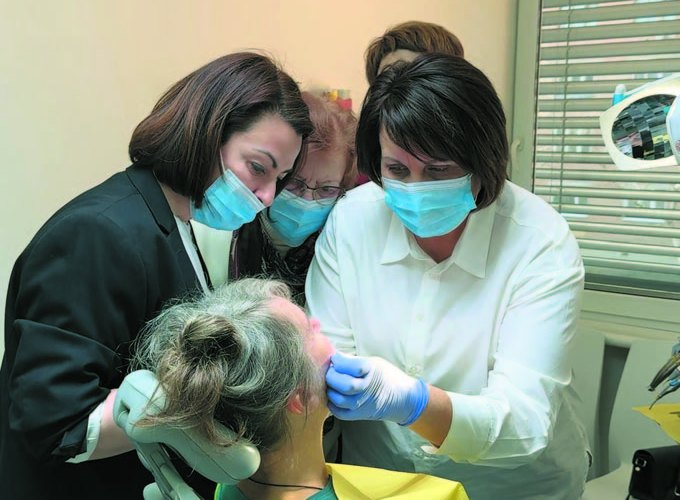
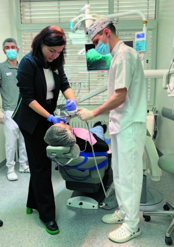
Лікар Катерина Сорока (м. Харків)
Володарка Гран-прі.
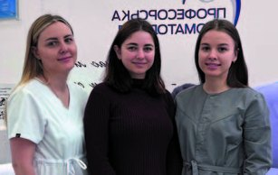
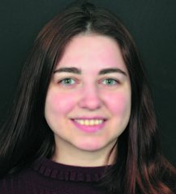
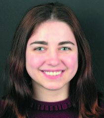
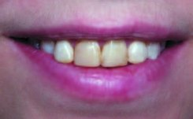
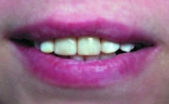
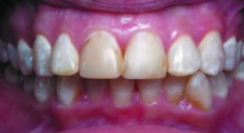
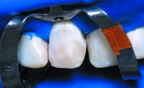
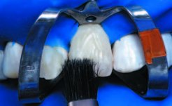
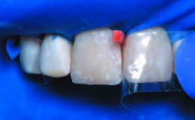
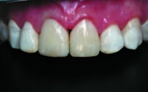
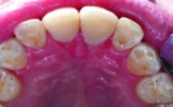
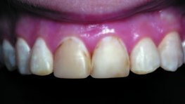
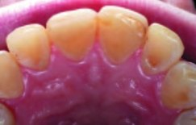
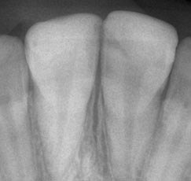
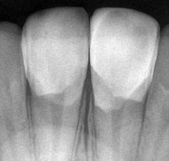
Лікар Олексій Крощенко (м. Охтирка)
Перше місце.
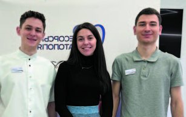
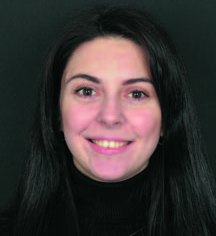
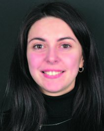
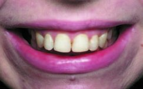
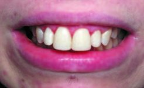
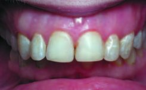
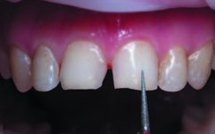
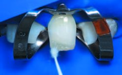
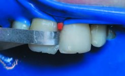
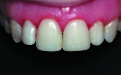
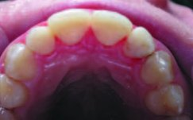
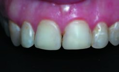
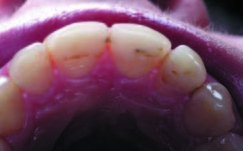
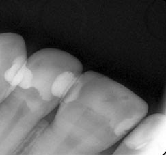
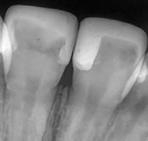
Лікар Ірина Охріменко (м. Полтава)
Друге місце.
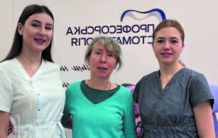
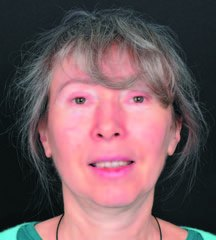
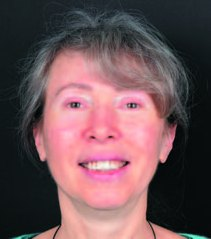
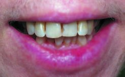
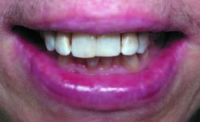
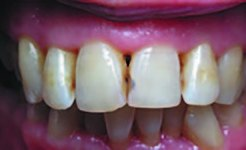
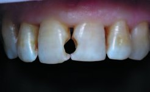
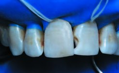
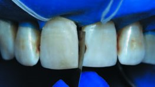
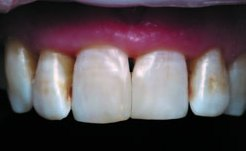
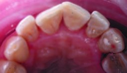
Лікар Борис Довгань (м. Тернопіль)
Друге місце.
Лікар Ілля Якимчук (м. Біла Церква)
Третє місце.
Лікар Аріна Яковлева (м. Миколаїв)
Третє місце.
Учасники конкурсу, а також асистуючі члени команд отримали дипломи та цінні подарунки від спонсорів: сертифікати на придбання бінокулярів і стоматологічної продукції MEDERGO, стоматологічний інструментарій від компанії Meddins, стоматологічні матеріали від PerioArtAcademy, новинки для догляду за зубами від компаній GUM, звукові зубні щітки Phillips Sony Care, зубні пасти та ополіскувачі Colgate, стоматологічні матеріали від Dentsply Sirona, книги від Асоціації стоматологів Полтавщини, журнали «ДентАрт» від Навчального центру «Аполлонія», ендодонтичний інструмент ENDOPEN, сертифікати для навчання від компанії НАВИЧКА, цінні подарунки від компанії MDS.
На сайті кафедри післядипломної освіти лікарів-стоматологів www.dentaero.com 17 лютого висвітлені етапи конкурсу, і протягом доби відбулося інтернет-голосування за кращу роботу, в якому приз глядацьких симпатій отримала Ірина Охріменко (м. Полтава).

Успішне відновлення твердих тканин зубів залежить від того, наскільки точно пломба чи реставрація відтворюють властивості природних тканин і наскільки міцно та непомітно вони з'єднуються із зубними структурами. Найвище досягнення лікаря-стоматолога – коли реставрований зуб має природний зовнішній вигляд і повністю відновлюється його функція та інтеграція з навколишніми тканинами.
Для досягнення успіху в реставрації важливі спостереження, розуміння та відтворення. У зв'язку з цим навчання фахівців передбачає певну послідовність. Починаючи з вивчення зубощелепної системи на кафедрі анатомії, студенти потім адаптують ці знання під час вивчення клінічних стоматологічних дисциплін.
На кафедрі пропедевтики терапевтичної, ортопедичної та хірургічної стоматології цей розділ вивчається докладно, а його обсяг розширюється на клінічних стоматологічних кафедрах. У процесі інтернатури цей матеріал розглядається як функціональна анатомія зубощелепної системи з урахуванням її відтворення в техніках прямої і непрямої реставрації, а також різних видів протезування. Основною метою інтернатури є підвищення рівня практичної підготовки стоматологів і їхня професійна адаптація до самостійної лікарської практики у своїй базовій спеціальності.
Серед загальної кількості інтернів виділяються ті, хто проявляє особливий інтерес до цієї галузі та має бажання демонструвати свої знання і навички. Вони не лише відзначаються вмінням виконувати роботу, але й мають особливі характеристики, які дозволяють їм працювати під увагою колег, демонструвати свої досягнення перед журі та в Інтернеті. Організація конкурсу серед лікарів-інтернів на кращу роботу з відновлення зруйнованих зубів в адгезивній техніці має на меті зацікавити їх у знаннях і вміннях застосування нових технологій і методик у галузі естетичної реставрації, а також демонстрації якості лікувальної роботи. Це допомагає інтернам показати свої навички та здобуті знання, а також сприяє популяризації цієї галузі.
При організації конкурсу було використано досвід аналогічного змагання – Призма-чемпіонату, який мав велику популярність на всьому пострадянському просторі.3
Конкурс має на меті такі цілі й завдання:
- популяризація та впровадження у практику лікаря-стоматолога сучасних технологій, якісних пломбувальних матеріалів і приладів;
- демонстрація стандарту якості роботи лікаря-стоматолога у реставраційній техніці;
- оновлення, формулювання і визначення чітких критеріїв якості реставрації з урахуванням новітньої інструментальної та матеріальної бази;
- інформування населення про можливості якісного лікування.
Відновлення твердих тканин зубів вважається успішним, лише якщо його результати відповідають сучасним стандартам і враховують індивідуальні потреби та очікування пацієнта. Це означає, що відновлені тверді тканини повинні відповідати вимогам анатомічної, функціональної, естетичної та психологічної реабілітації пацієнта.
Для оцінки якості робіт використовували критерії якості, які розробив Сергій Радлінський для Призма-чемпіонату.2
На кожному етапі конкурсу відбувається фотореєстрація, яка допомагає журі конкурсу визначити якісне втілення всіх нюансів реставрації. Конкурсний досвід дозволяє отримати важливі спостереження, проаналізувати помилки і труднощі, з якими стикаються лікарі-інтерни, сформувати чіткий алгоритм реставрації. Стійкий гарантований результат можна отримати завдяки дотриманню протоколів роботи, наполегливому тренуванню та аналітичному розумінню головних критеріїв зовнішнього вигляду природних тканин зуба.
| Параметри | Способи оцінки |
|---|---|
| Загальний вигляд і пропорції | Візуальний, вимірювання в різних напрямках штангенциркулем |
| Підбір відтінків і моделювання переходів кольору | Візуальне порівняння з натуральними зубами при яскравому освітленні і темним фоном |
| Прозорість ріжучого краю і проксимальних поверхонь | Візуальне порівняння у прохідному і відбитому світлі різного спрямування |
| Тіло зуба | Візуальне порівняння з освітленням і без освітлення |
| Шийка зуба | Візуальне порівняння у променях полімеризаційної лампи |
| Крайове прилягання | Зондування ясенної борозни, перевірка флосами, рентгенівський знімок |
| Рельєф і блиск поверхні | Візуальне порівняння з натуральними зубами у висушеному вигляді |
| Контактні пункти (цілісність, форма) | Перевірка лавсановою смужкою, візуальне визначення рівня контактної точки та конфігурації проксимальної поверхні |
| Оклюзійні контакти | Перевірка артикуляційною фольгою і папером |
| Артистичність виконання | Візуальне порівняння у прохідному і відбитому світлі різних напрямків |
| Дотримання здоров'я пацієнта | Анамнез, оцінка технологічних етапів реставраційного процесу, тривалість роботи |
Протокол прямої реставрації каріозних порожнин включає кілька ключових етапів: очищення зубів, визначення кольору, знеболювання, препарування, використання рабердаму, адгезивну підготовку, моделювання, фінішну обробку та полірування реставрації.
Важливим, але іноді недооціненим етапом є контроль якості реставрації. Він включає візуальне порівняння у різних світлових умовах, зондування ясенного жолобка, перевірку флосами, контрольний рентгенівський знімок, перевірку лавсановою смужкою, візуальне визначення рівня контактної точки та конфігурації проксимальної поверхні, а також порівняння з природними зубами для оцінки якості полірування. Наші спостереження свідчать, що лікарі-інтерни найбільше стикаються з труднощами на етапах підбору кольору, препарування глибоких порожнин і побудови контактних пунктів.
Професійні конкурси майстерності, зокрема Всеукраїнський конкурс з реставрації зубів «Шлях у світ майстерності», що проводиться протягом 25 років на базі кафедри післядипломної освіти лікарів-стоматологів ПДМУ (раніше УМСА), сприяє приверненню уваги лікарів-інтернів і викладачів кафедр та фахівців галузі до важливості створення протоколів оцінки якості реставрацій. Такі конкурси демонструють, що стійкий і гарантований результат можливий завдяки тренуванню та аналізу ключових критеріїв зовнішнього вигляду природних тканин зуба. Кожна успішна реставрація створює репутацію лікаря, який тільки починає свій професійний шлях, його професійний статус і майбутню довіру пацієнтів. Участь у конкурсах дає можливість створити портфоліо для подальшого успішного працевлаштування.
Крім того, конкурси стають чудовою платформою для обміну досвідом і показу найкращих практик виконання процедур з використанням сучасних матеріалів. На кожному етапі конкурсу робиться фотодокументація, що допомагає журі визначити якість виконання всіх нюансів реставрації. Оцінка відновлених зубів є досить суб'єктивною, оскільки одні й ті ж результати можуть сприйматися різними фахівцями по-різному. Також важливо знати враження та думку пацієнта як майбутнього користувача після завершення відновлення зубів – його оцінка може бути суб'єктивною за формою, але об'єктивною за змістом, оскільки візуальне сприйняття реставраційної конструкції є важливим в оцінці її якості.
У випадку, якщо реставрація зубів не видається задовільною, це може бути пов'язано з неефективністю одного з етапів. У такому випадку слід уважно проаналізувати всі етапи відновлення зуба, визначити причину невдачі і під керівництвом лікаря-інструктора внести корективи та виправити критичні помилки поза конкурсом.
Фото Софії Сердюк
Література
- Скрипніков П. М., Скрипнікова Т. П., Хміль Т. А., Лазарєва К. А., Бережна О. Е. Експертиза якості прямих реставрацій передніх зубів в рамках конкурсу лікарів-інтернів // Проблеми безперервної медичної освіти та науки. – 2021. – № 1.
- Лазарева К. А. Биомиметическая техника реставрации передних зубов с материалом CeramX One SphereTEC // ДентАрт. – 2018. – № 2. – С. 52–58.
- Лазарева К. А. Реставрация контактных поверхностей передних зубов // ДентАрт. – 2019. – № 2. – С. 36–46.
- Ломиашвили Л. М. Изучение клинико-морфологических особенностей зубочелюстной системы при проведении реставрационных работ // Институт стоматологии. – 2003. – № 2 (19). – С. 26–31.
- Ломиашвили Л. М. Художественное моделирование и реставрация зубов / Л. М. Ломиашвили, Л. Г. Аюпова // М: Медицинская книга, 2004. – 252 с.
- Радлинский C. B. Адгезивная техника искусственных коронок зубов // ДентАрт. – 1997. – № 3. – С. 23–31.
- Радлинский C. B. Биомиметические направление в реставрации зубов // Маэстро. – 2002. – № 5. – С. 10–17.
- Радлинский C. B. Виды прямой реставрации зубов. // ДентАрт. – 2004. – № 1. – С. 33–40.
- Радлинский C. B. Реставрация контактных поверхностей верхних передних зубов // ДентАрт. – 2008. – № 1. – С. 34–48.
- Радлинский C. B. Реставрация передних зубов // ДентАрт. – 1998. – № 3. – С. 29–41.
- Радлинский C. B. Управление прозрачностью реставрационных конструкций. // ДентАрт. – 1997. – № 4. – С. 30–39.
- Радлинский C. B. Финишная отделка реставраций // ДентАрт. – 1998. – № 4. – С. 72–86.
- Флейшер Г. М. Индексная оценка восстановленных зубов и реставраций. Руководство для врачей: ЛітРес, 2019.
- Скрипніков П. М., Скрипнікова Т. П., Лазарєва К. А., Бережна О. Е., Хміль Т. А. XXIV Всеукраїнський професійний конкурс лікарів-стоматологів «Шлях у світ майстерності» завершився: вітаємо переможців! // ДентАрт. – 2023. – № 1. – С. 38–46.